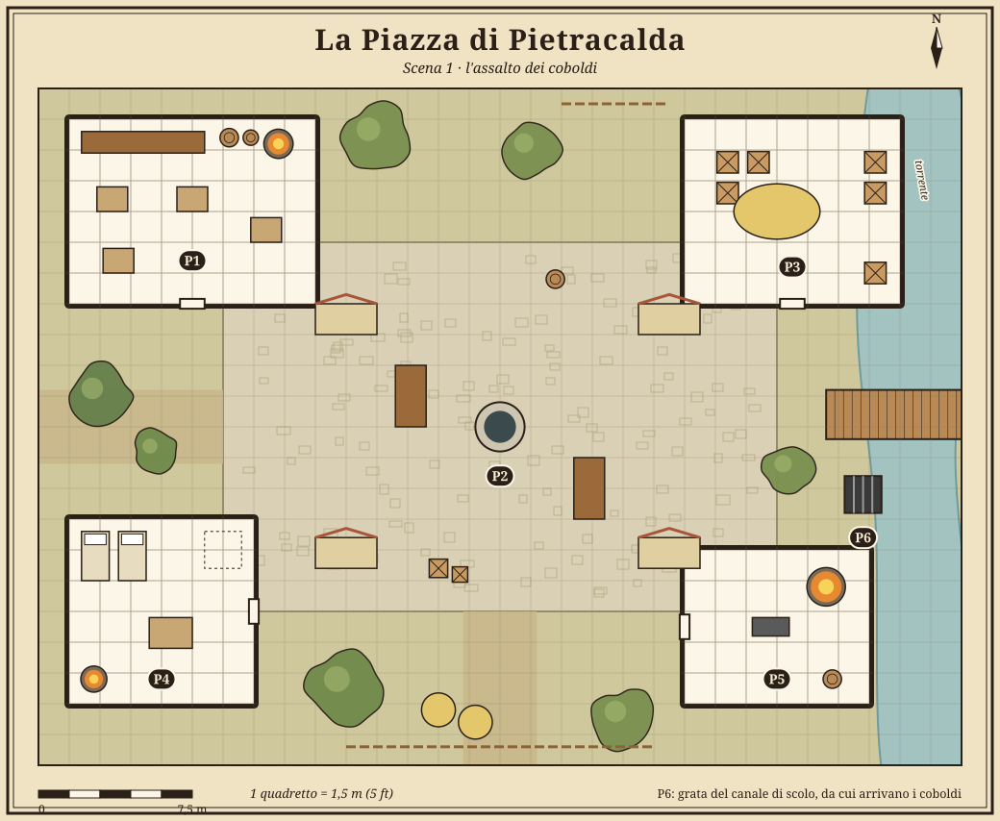
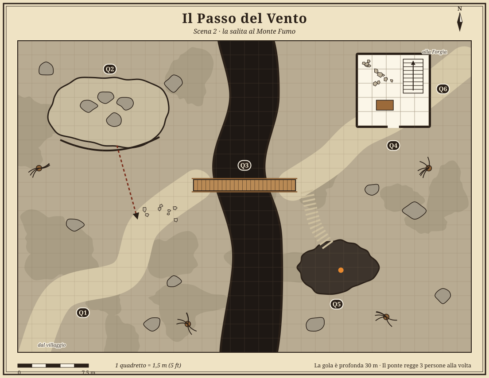
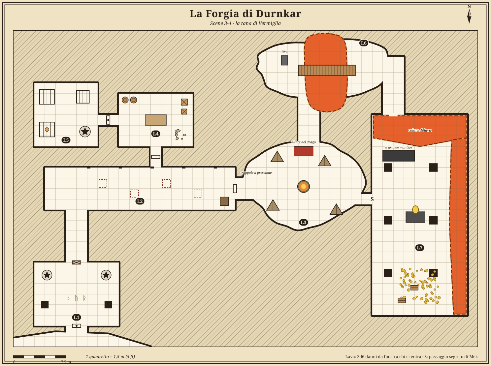

Un'avventura one-shot di draghi per Dungeons & Dragons 5ª edizione
Manuale del Master
5 giocatori · personaggi di 3° livello
Una sessione da circa 4 ore · pensata per giocatori e Master alle prime armi
Si gioca anche online. La cartella tavolo/ del repository contiene una web app con le tre mappe, le pedine, i mostri e le schede di questo one-shot già caricati. Le istruzioni sono nel file LEGGIMI.txt di quella cartella.
Pietracalda è un villaggio di pastori e minatori ai piedi del Monte Fumo, un vecchio vulcano addormentato. Tre settimane fa, nella forgia abbandonata dei nani dentro la montagna, la Forgia di Durnkar, si è stabilita Vermiglia: una giovane drago rossa, arrogante e affamata d'oro. La tribù di coboldi Scagliarossa la venera come una dea.
Pochi giorni fa Tilde, la nipotina di dieci anni del vecchio fabbro, ha trovato nel torrente uno strano uovo dorato, caldo come una pietra al sole, e lo ha nascosto in casa. È un uovo di drago d'oro. Vermiglia ne ha sentito l'odore e lo vuole: un drago d'oro, crescendo, diventerebbe il suo peggior nemico, e lei vuole distruggerlo prima che si schiuda.
Stanotte i coboldi assaltano il villaggio per prendere l'uovo. Tilde non lo lascia andare e viene rapita insieme all'uovo. Gli eroi devono salire sul Monte Fumo, attraversare la forgia, liberare Tilde e salvare l'uovo prima che Vermiglia lo spacchi sulla grande incudine.
Il colpo di scena. Durante lo scontro finale, il calore della forgia e il coraggio degli eroi fanno schiudere l'uovo. Nasce Lumino, un cucciolo di drago d'oro, che aiuta il gruppo contro Vermiglia. È il momento che i giocatori ricorderanno di più!
Struttura (circa 4 ore)
Scena
Cosa succede
Tempo
Mappa
0
Presentazione dei personaggi e delle regole
20 min
–
1
La locanda, l'assalto dei coboldi, il rapimento
45 min
01 · Piazza
2
La salita, l'agguato al ponte, l'incontro con Mek il coboldo
40 min
02 · Passo
3
La Forgia: trappole, coboldi, prigione, ponte di lava
90 min
03 · Forgia
4
Lo scontro con Vermiglia e la nascita di Lumino
45 min
03 · Forgia (L7)
Se il tempo stringe, accorcia la Scena 3: salta la dispensa (L4) e fai portare il gruppo da Mek direttamente in L3 o in L5. Un one-shot deve finire con il drago, anche se si salta qualche stanza!
Come condurla
Livello 3, niente salti di livello. Le schede pronte sono nel file dei personaggi.
Riposo breve: il gruppo può farne uno, nella grotta di Mek (Scena 2) o nella prigione dopo averla liberata (L5). Ricordalo ai giocatori.
Con meno di 5 giocatori: togli un coboldo o un mefite da ogni scontro e dai 15 punti ferita in meno a Vermiglia.
Le CD: 10 facile, 12 media, 15 difficile.
Nessuno muore per sfortuna. Vermiglia è crudele ma vanitosa: preferisce vantarsi e minacciare piuttosto che finire un personaggio a terra.
Scena 1 · L'assalto a Pietracalda
È una sera fredda di fine estate a Pietracalda. Il cielo sopra il Monte Fumo è rosso come una brace: da tre settimane la vecchia montagna fuma di nuovo, e qualcuno giura di aver visto un'ombra alata girarle attorno. Siete alla locanda «Il Boccale Bruciato». Il fuoco scoppietta, l'oste Bertoldo serve stufato di montone, e una bambina con le trecce rosse corre tra i tavoli vendendo castagne. Si chiama Tilde. Ha le tasche gonfie, e lo sguardo di chi custodisce un segreto.
Fai presentare i personaggi: ognuno descrive il suo aspetto e dice perché si trova alla locanda (le schede hanno un'idea pronta). Poi lascia un po' di gioco libero:
Tilde si avvicina al personaggio che le sembra più gentile: «Sai mantenere un segreto?» Con Persuasione CD 10, o se il personaggio è simpatico, mostra di nascosto un uovo dorato e caldo grande come un melone, avvolto in uno scialle. «L'ho trovato nel torrente. Quando lo tocco, fa le fusa!» Con Arcano o Natura CD 12 si capisce che è un uovo di drago.
Nonno Gualtiero, il fabbro, si lamenta: «I coboldi rubano pecore da settimane. Dicono che lavorano per un drago. Bah! Leggende.»
L'oste Bertoldo racconta che la vecchia Forgia di Durnkar, dentro il Monte Fumo, fu abbandonata dai nani cent'anni fa, «quando la lava si risvegliò».
Un corno stonato rompe la notte. Poi un altro. Dalla piazza arrivano urla, il belato terrorizzato delle pecore e un coro di vocette stridule: «Per Vermiglia! Per la Signora Rossa! Prendete l'uovo!» Tilde impallidisce e stringe lo scialle al petto.
Facile⚔ Scontro 1 · L'assalto dei coboldi (mappa 01, Piazza) Nemici: 5 Coboldi e 1 Sciamano coboldo. Posizioni: i coboldi escono dalla grata del canale (P6) e si sparpagliano per la piazza (P2). Due provano a sfondare la porta della casa di Tilde (P4), lo sciamano resta vicino alla grata. Obiettivo dei coboldi: l'uovo, non uccidere. Fine: dopo 3 round, oppure quando metà dei coboldi è a terra, compare Graffio, un coboldo alato. Piomba dal cielo, afferra Tilde, che non molla l'uovo, e vola via verso il Monte Fumo. Non si può fermare: è il momento in cui parte l'avventura. Gli altri coboldi fuggono nel canale.
È il primo scontro: spiega l'iniziativa, il turno (movimento + azione) e il fatto che i coboldi hanno la Tattica del branco (vantaggio quando un amico è vicino al bersaglio). Fai vedere che i coboldi scappano quando sono in difficoltà: i giocatori impareranno che non tutti combattono fino alla morte.
Dopo l'assalto
Nonno Gualtiero cade in ginocchio in mezzo alla piazza, con il martello ancora in mano. «La mia Tilde… l'hanno portata su, alla montagna.» Poi alza lo sguardo su di voi. «Vi prego. Riportatemela. Non ho molto, ma tutto quello che ho è vostro.»
Ricompensa: Gualtiero offre 200 mo (i risparmi del villaggio) e la sua opera migliore, un'arma +1 a scelta del gruppo, forgiata anni fa per un cavaliere che non tornò mai a prenderla.
Un coboldo catturato, se ce n'è uno, rivela con Intimidire o Persuasione CD 10: «La Signora Rossa vuole l'uovo d'oro! Lo spaccherà sulla grande incudine quando la luna sarà alta!» Ci sono quindi poche ore.
Pozioni: l'oste regala al gruppo 2 pozioni di guarigione.
La strada: il sentiero per la Forgia sale il Passo del Vento. Si arriva in un'ora e mezza di marcia.
Scena 2 · Il Passo del Vento
Il sentiero sale tra rocce nere e cespugli bruciati. Il vento porta odore di zolfo. Dopo un'ora di salita, la strada si interrompe davanti a una gola profonda: la attraversa un vecchio ponte di corde che oscilla nel buio. Sull'altro lato, contro il cielo rosso, si vedono le rovine di una torre di guardia dei nani.
Q1 · Il sentiero
Chi tiene gli occhi aperti (Percezione passiva 13 o più) nota sassolini che cadono dall'alto, dalla sporgenza (Q2). Qualcuno è appostato lassù.
Q2 · La sporgenza dei coboldi
Tre coboldi aspettano il gruppo con una trappola di massi: li fanno rotolare lungo il sentiero (freccia sulla mappa).
Trappola · Frana! Chi è sul sentiero tra la sporgenza e il ponte fa un TS Destrezza CD 12: se lo fallisce subisce 2d6 danni contundenti, se lo supera la metà. Se il gruppo ha notato i sassolini, ha vantaggio al tiro salvezza.
Facile⚔ Scontro 2 · L'agguato Nemici: 3 Coboldi sulla sporgenza (con le fionde) e Graffio il coboldo alato, che lancia sassi dal cielo. Salire sulla sporgenza: Atletica CD 12, oppure 2 round di cammino aggirando la roccia. Fine: Graffio, a metà dei punti ferita, vola via verso la Forgia gridando «Lo dirò alla Signora!».
Q3 · Il ponte di corde
Regge tre persone alla volta. Attraversarlo camminando è sicuro. Chi corre, combatte o ci passa in più di tre fa una prova di Acrobazia CD 10: se la fallisce resta aggrappato alle corde e deve usare un'azione per rimettersi in piedi.
Q4 · La torre in rovina
C'è una scala che sale a una piattaforma con la vista sulla Forgia. In una cassa dei nani, sotto le macerie, si trovano una corda di seta e un Elmo della Luce, un oggetto speciale di questa avventura: con un'azione emette luce intensa per 9 m, una volta per riposo breve.
Q5 · La grotta di Mek
Dietro un masso c'è una piccola grotta con un fuocherello. Ci vive Mek, un coboldo inventore cacciato dalla tribù perché «non adorava abbastanza». Ha gli occhialini da saldatore e uno zaino pieno di attrezzi.
Una vocina acuta esce dal buio: «Non-non sparate! Mek è un amico! Mek non ama la Signora Rossa. La Signora Rossa ha bruciato le invenzioni di Mek!» Un coboldo minuscolo, con occhialini enormi e la coda fasciata, sbuca da dietro un masso agitando una chiave inglese.
Mek può aiutare moltissimo il gruppo. Conosce un passaggio segreto che porta dalla tana dei coboldi (L3) alla Sala della Grande Forgia (L7). Sa che la porta dei nani (L1) si apre premendo le rune «nell'ordine del martello: fuoco, ferro, pietra». Sa anche dove sono le trappole in L2. In cambio vuole solo «che la Signora Rossa se ne vada» e il permesso di tenere qualche ingranaggio della forgia. Se viene trattato bene, si unisce al gruppo; il Master lo muove, ma non combatte. Questo è un buon posto per il riposo breve.
Q6 · Verso la Forgia
Il sentiero termina davanti a un grande portale scolpito nella roccia del vulcano.
Scena 3 · La Forgia di Durnkar
Usa la mappa 03 · La Forgia di Durnkar. Le sale sono calde, illuminate dal bagliore rosso della lava. Nella tana dei coboldi (L3) e nella sala della forgia (L7) c'è luce; altrove c'è penombra.
L1 · Il portale dei nani
Un atrio con due statue di nani fabbri. La porta d'ingresso a sud è chiusa (Destrezza CD 12 con gli attrezzi da scasso, oppure Atletica CD 15), ma Mek ha una chiave. La porta interna a nord è sigillata da tre rune luminose: ᚦ fuoco, ᚢ ferro, ᚱ pietra.
Enigma · Le rune del martello. Sopra la porta è inciso: «Il fuoco scalda il ferro, il ferro batte la pietra.» Le rune vanno premute nell'ordine fuoco → ferro → pietra. Se l'ordine è sbagliato, dalle statue esce un getto di vapore: tutti nell'atrio subiscono 1d6 danni da fuoco, poi si può riprovare. Mek conosce la soluzione. Anche Ottavio la ricava, con Storia CD 10.
L2 · La sala delle trappole
Un lungo salone con feritoie nel muro nord e lastre del pavimento leggermente diverse dalle altre: sono le piastre a pressione, segnate in rosso sulla mappa.
Trappola · Le piastre. Chi cerca trappole le nota con Percezione o Indagare CD 12 (Mek le conosce tutte). Chi calpesta una piastra fa partire una raffica di dardi dalle feritoie: TS Destrezza CD 12, e chi lo fallisce subisce 2d4 danni perforanti. Pip le disattiva con Destrezza CD 12 usando gli attrezzi da scasso. In fondo alla sala c'è un gong: i coboldi lo usano come allarme verso L3.
L3 · La tana dei coboldi
Una caverna con tende di pelle, un falò e un altare rosso decorato con scaglie e monete. Ci sono 4 coboldi e lo sciamano che celebrano la Signora Rossa con una danza ridicola.
I coboldi hanno paura. Vermiglia li tratta malissimo e ne ha già arrostiti due «per sbaglio». Il gruppo può:
Convincerli con Persuasione CD 12, o con Intimidire CD 12 mostrando la forza del gruppo, a scappare o a restare in disparte. Se Mek è con il gruppo e parla con loro, la prova ha vantaggio.
Ingannarli con Inganno CD 13: «Siamo i nuovi servitori della Signora!».
Aggirarli con Furtività CD 12 (prova di gruppo).
Media⚔ Scontro 3 · La tana Nemici: 4 Coboldi e 1 Sciamano coboldo. Se il gong in L2 è suonato, c'è anche Graffio. Fine: quando lo sciamano cade, gli altri si arrendono e implorano di non essere consegnati alla Signora.
Il passaggio segreto (S sulla mappa) porta direttamente in L7. Si trova con Percezione CD 15, oppure lo mostra Mek. Prenderlo permette di sorprendere Vermiglia: il gruppo ha un round gratuito all'inizio dello scontro finale.
L4 · La dispensa
Botti, casse di carne di pecora e un tavolo. Tre scarafaggi di fuoco giganti, grossi come gatti e luminosi come lanterne, si stanno mangiando le provviste. Sono quasi innocui ed è un incontro comico: si possono anche catturare, e la loro ghiandola fa luce per un giorno intero. In una cassa ci sono 2 pozioni di guarigione.
L5 · La prigione
Gabbie di ferro arrugginite. In una c'è Tilde, senza l'uovo, che è già stato portato da Vermiglia. Tilde è spaventata ma combattiva: «Gliel'ho morsa, la coda, a quel coboldo con le ali!» Davanti alle gabbie, immobile come una statua, c'è un'armatura nanica animata, il vecchio guardiano della forgia, che i coboldi hanno «convinto» a fare la guardia.
Facile⚔ Scontro 4 · Il guardiano di ferro Nemici: 1 Armatura animata. Alternativa: chi parla in nanico (o mostra un oggetto dei nani, come l'Elmo della Luce della torre) e supera una prova di Persuasione CD 12 la fa tornare in posizione di riposo.
La porta della prigione si apre con Destrezza CD 12 (attrezzi da scasso); la chiave ce l'ha Graffio. Cosa fare con Tilde: la bambina vuole venire a riprendersi «il suo uovo». Se il gruppo la lascia indietro, Mek può riaccompagnarla al villaggio. Se viene con loro, nel finale potrà aiutare (vedi Scena 4).
L6 · Il ponte di lava
Una grotta tagliata da un fiume di lava. Il ponte di ferro è sollevato: per abbassarlo bisogna tirare la leva sul lato ovest. Il calore è soffocante. Due mefiti magmatici, spiritelli di lava dispettosi, giocano nel fiume e attaccano chi si avvicina al ponte.
Facile⚔ Scontro 5 · I mefiti Nemici: 2 Mefiti magmatici. Quando muoiono esplodono in schizzi di lava: avvisa i giocatori! Lava: chi ci entra subisce 3d6 danni da fuoco e ne esce subito. Chi viene spinto verso la lava fa prima un TS Destrezza CD 10 per aggrapparsi al bordo.
Scena 4 · Vermiglia
La Sala della Grande Forgia è immensa. Colate di lava scorrono lungo le pareti come fiumi di fuoco, e l'aria trema per il calore. Al centro, su un'incudine nera grande come un carro, c'è l'uovo dorato: brilla debolmente, come un cuore che batte. Accanto all'incudine, sdraiata su un letto di monete d'oro, c'è lei. Vermiglia è lunga come tre cavalli, con scaglie del colore del vino e occhi gialli come braci. Solleva la testa con calma e sorride, mostrando file di denti affilati. «Ospiti. Che bello. Siete venuti a vedermi fare colazione?»
Vermiglia ama parlare. Se i personaggi la lusingano o la provocano, si vanta del suo tesoro, della sua bellezza e del suo futuro impero. Ogni round di conversazione è un round guadagnato: il gruppo può usarlo per posizionarsi o per far sgattaiolare qualcuno verso l'uovo (Furtività contro la Percezione passiva di Vermiglia, che è 14). Non si lascia però convincere a rinunciare all'uovo: a un certo punto si stanca e attacca.
Difficile · scontro finale⚔ Scontro finale · Vermiglia, la Signora Rossa Nemici: Vermiglia (vedi Bestiario). Tattica: nel primo round usa il soffio di fuoco sul gruppo più numeroso. Poi morde chi le fa più male. Quando non può usare il soffio, vola sopra la lava, dove è difficile raggiungerla. Annuncia il soffio! Quando il soffio si ricarica, descrivi Vermiglia che inspira e gonfia il petto, con la luce rossa che le brilla in gola. I giocatori possono allontanarsi o nascondersi dietro i pilastri (mezza copertura: +2 al tiro salvezza). La lava: chi viene spinto nelle colate subisce 3d6 danni da fuoco. Il mantice: un personaggio vicino al grande mantice può azionarlo con un'azione (Atletica CD 12). Una vampata di aria calda investe Vermiglia, che deve superare un TS Forza CD 12 o cadere a terra (prona) se sta volando.
La nascita di Lumino
All'inizio del 3° round, oppure prima se qualcuno porta l'uovo vicino alla lava o se Tilde lo abbraccia, l'uovo si schiude.
Un suono come di vetro che si incrina. L'uovo dorato si spacca, e una luce calda, come di sole che sorge, riempie la sala. Ne esce un draghetto grande come un cane, con scaglie d'oro lucente e due enormi occhi color miele. Sbatte le ali bagnate, starnutisce una nuvoletta di scintille… e poi vede Vermiglia. Le sue piccole fauci si spalancano in un ruggito sorprendentemente forte.
Lumino, il cucciolo di drago d'oro, si unisce al gruppo. Affidalo al giocatore che lo ha protetto di più (o a Tilde, cioè a te). Agisce subito dopo quel giocatore. Vedi la scheda nel Bestiario. Al suo primo turno usa sempre il Soffio di luce.
Se l'uovo è stato rubato prima dello scontro (bel colpo, Pip!), si schiude comunque al 3° round, tra le braccia di chi lo porta.
Fine dello scontro
Quando Vermiglia scende a 15 punti ferita o meno, capisce di aver perso.
Vermiglia sibila, con il fumo che le esce dalle narici. «Questo… non finisce qui. Ricorderò le vostre facce. Ricorderò il vostro odore.» Poi spalanca le ali, si alza in volo in un turbine di cenere e sparisce nel camino della forgia, verso il cielo rosso.
Se il gruppo vuole finirla, può: in questo caso Vermiglia combatte fino alla fine. Fuggire però lascia un bel gancio per un'avventura futura.
Epilogo
All'alba, la processione scende dal Monte Fumo: gli eroi stanchi e bruciacchiati, una bambina con le trecce rosse che non smette di parlare, un coboldo con gli occhialini che fischietta… e un draghetto d'oro che dorme, arrotolato come un gatto, sulle spalle di uno di voi. A Pietracalda vi aspettano tutti, con le torce accese. Nonno Gualtiero corre incontro a Tilde e la solleva in aria. Poi guarda Lumino, guarda voi, e scoppia a ridere fino alle lacrime.
Ricompense: 200 mo da Gualtiero, l'arma +1 promessa e il tesoro di Vermiglia: 600 mo in monete antiche, una pozione di guarigione superiore, un Anello di protezione e una gemma rossa da 100 mo.
Lumino non può restare al villaggio: un giorno sua madre, una grande drago d'oro, verrà a cercarlo. Fino ad allora sceglie come «mamma» il personaggio che lo ha difeso di più. Ecco un gancio perfetto per giocare ancora!
Mek apre un laboratorio di invenzioni nella vecchia forgia, «con il permesso dei nuovi padroni».
Bestiario
Per colpire un personaggio, tira 1d20 + il bonus d'attacco: se arrivi alla sua CA, lo colpisci. I mostri qui sono semplificati, così è più facile gestirli.
Coboldo
Umanoide Piccolo · fanatico di Vermiglia, codardo
CA 12 · PF 5 · Velocità 9 m
FOR7 (−2)
DES15 (+2)
COS9 (−1)
INT8 (−1)
SAG7 (−2)
CAR8 (−1)
Tattica del branco. Ha vantaggio a colpire se un altro coboldo è accanto al bersaglio. Vede al buio fino a 18 m.
Pugnale. +4 per colpire, 1d4+2 danni perforanti. Fionda. +4 per colpire (9/36 m), 1d4+2 danni contundenti.
GS 1/8.
Sciamano coboldo
Umanoide Piccolo · sacerdote della Signora Rossa
CA 12 · PF 12 · Velocità 9 m
Lingua di fuoco.Attacco a distanza (18 m): +4 per colpire, 1d10 danni da fuoco.
Grido della Signora (una volta per scontro, azione bonus). Tutti i coboldi entro 9 m aggiungono +1d4 ai loro attacchi fino al prossimo turno dello sciamano.
GS 1/4.
Graffio, il coboldo alato
Umanoide Piccolo · il «comandante» dei Scagliarossa
CA 13 · PF 14 · Velocità 9 m, volo 9 m
Sasso dall'alto. +5 per colpire, 1d6+3 danni contundenti (solo se vola sopra il bersaglio). Pugnale. +5 per colpire, 1d4+3 danni perforanti.
Vigliacco. A metà dei PF vola via.
GS 1/4.
Scarafaggio di fuoco gigante
Bestia Piccola · innocuo e luminoso
CA 13 · PF 4 · Velocità 9 m · Morso +1 per colpire, 1d4−1 danni taglienti. Fa luce come una torcia. GS 0.
Armatura animata
Costrutto Medio · guardiano nanico
CA 18 · PF 33 · Velocità 7,5 m
Multiattacco. Due schianti: +4 per colpire, 1d6+2 danni contundenti ciascuno.
Immune al veleno e alla paura. Non dorme e non si stanca.
GS 1.
Mefite magmatico
Elementale Piccolo · dispettoso, ride come una teiera
CA 11 · PF 22 · Velocità 9 m, volo 9 m
Immune al fuoco. Vulnerabile al freddo.
Artigli. +3 per colpire, 1d4+1 danni taglienti più 2d4 danni da fuoco.
Sputo di lava (tira 1d6 all'inizio del suo turno: con 6 può usarlo). Cono di 4,5 m, TS Destrezza CD 11: 2d6 danni da fuoco, o la metà se lo supera.
Esplosione. Quando muore, chi è entro 1,5 m fa un TS Destrezza CD 11: 2d6 danni da fuoco, o la metà se lo supera.
GS 1/2.
Vermiglia, la Signora Rossa
Drago Grande (giovane drago rosso) · vanitosa, crudele, chiacchierona
CA 17 · PF 70 · Velocità 9 m, scalata 9 m, volo 18 m
FOR19 (+4)
DES10 (+0)
COS17 (+3)
INT12 (+1)
SAG11 (+0)
CAR15 (+2)
Immune al fuoco. Vede al buio fino a 18 m. Percezione passiva 14.
Multiattacco. Un morso e un colpo d'artigli.
Morso. +6 per colpire, 1d10+4 danni perforanti più 1d6 danni da fuoco.
Artigli. +6 per colpire, 1d6+4 danni taglienti.
Soffio di fuoco (all'inizio dello scontro, poi tira 1d6 all'inizio di ogni suo turno: con 5-6 può usarlo di nuovo). Cono di 4,5 m, TS Destrezza CD 13: 6d6 danni da fuoco, o la metà se lo supera. Usalo al posto del Multiattacco.
Superba. Non finisce mai un personaggio a terra: preferisce ridere di lui e passare al prossimo.
Fuga. A 15 PF o meno vola via dal camino.
GS 4 (versione semplificata per principianti).
Lumino, il cucciolo di drago d'oro (alleato)
Drago Piccolo · appena nato, coraggiosissimo
CA 15 · PF 25 · Velocità 9 m, volo 9 m (ma vola goffamente)
Immune al fuoco.
Morso. +5 per colpire, 1d8+3 danni perforanti.
Soffio di luce (una volta). Vermiglia fa un TS Costituzione CD 13: se lo fallisce è accecata fino alla fine del suo prossimo turno, e tutti hanno vantaggio ad attaccarla.
Scudo d'oro (reazione, una volta). Quando un alleato entro 1,5 m sta per subire il soffio di fuoco, Lumino apre le ali: l'alleato non subisce danni.
Mappe

01 · La Piazza di Pietracalda. P1 locanda «Il Boccale Bruciato», P2 piazza e pozzo, P3 granaio, P4 casa di Tilde e del nonno, P5 fucina, P6 grata del canale.

02 · Il Passo del Vento. Q1 sentiero, Q2 sporgenza dei coboldi, Q3 ponte di corde, Q4 torre in rovina, Q5 grotta di Mek, Q6 verso la Forgia.

03 · La Forgia di Durnkar. L1 portale, L2 trappole, L3 tana dei coboldi, L4 dispensa, L5 prigione, L6 ponte di lava, L7 Sala della Grande Forgia.